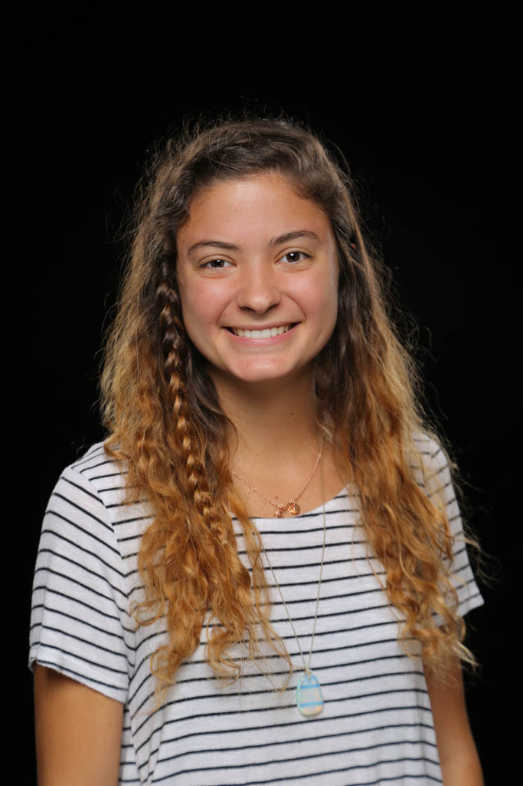
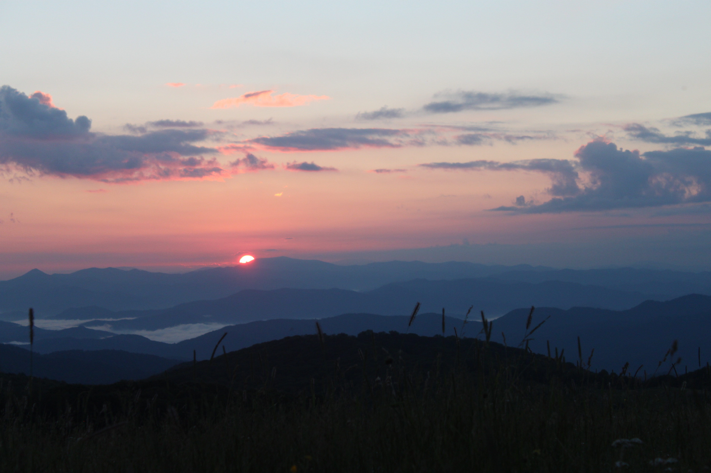

Aspiring Photojournalist | Sarah Sheridan
 
Who am I?
I am a journalism and mass communication major interested in photography. Originally from Chicago, I have fallen in love with the mountains in the South and have picked up a passion for hiking. I participate on the Bruins Cross Country Team. My dream job is to work at National Geographic or the Chicago Tribune. I currently work as a free lance photogrpaher and enjoy shooting for engagements and events in the Greenville area.
Visit my Website!
Visit my Instagram Portfolio!